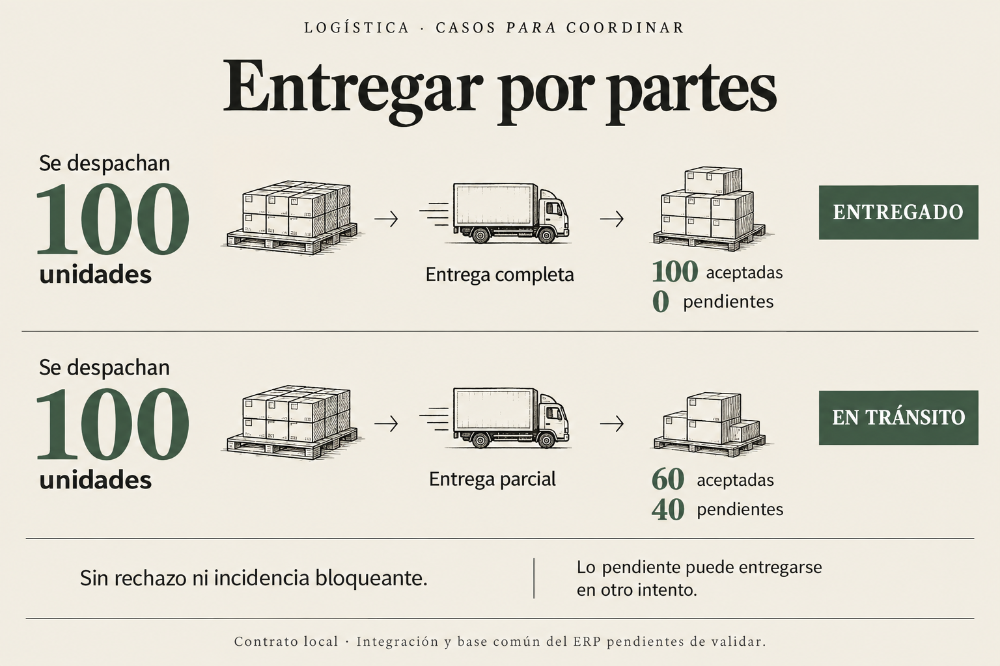
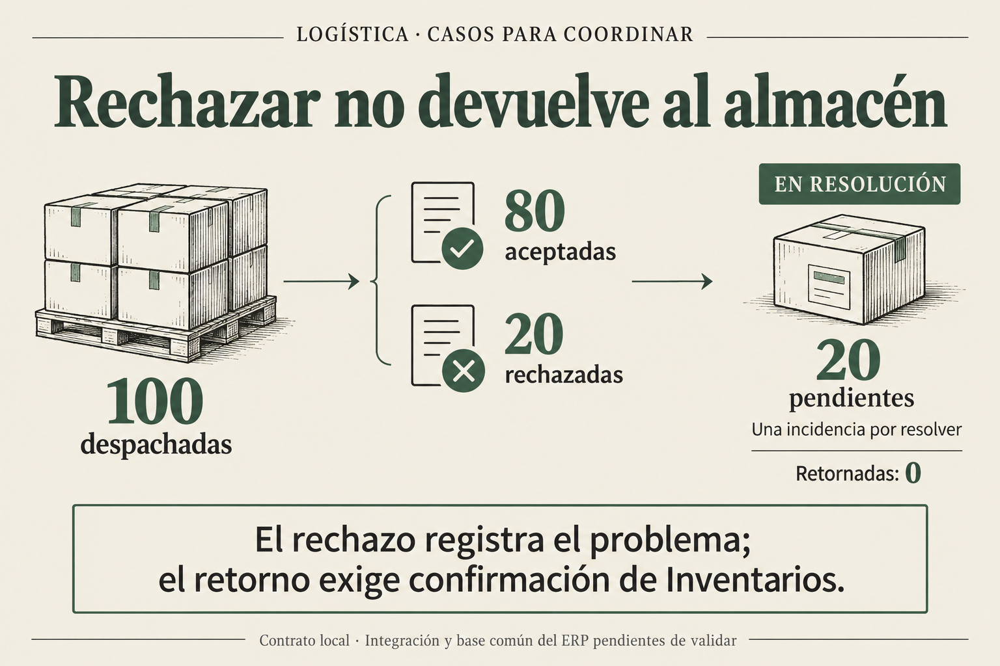
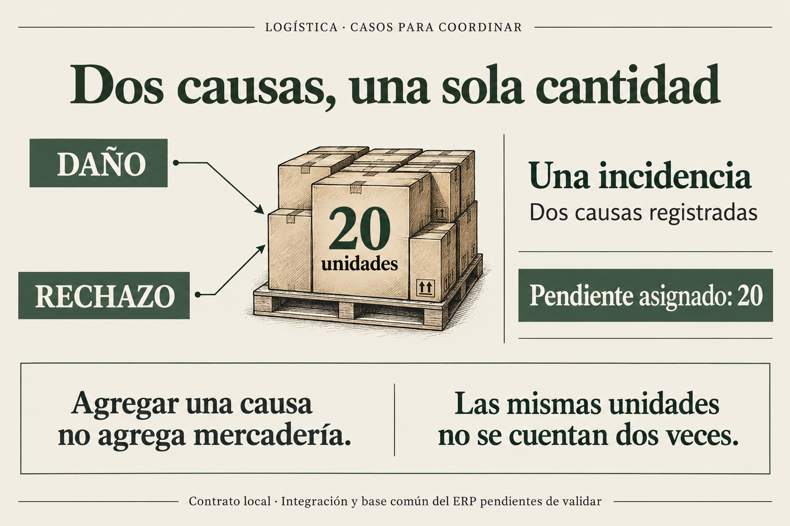
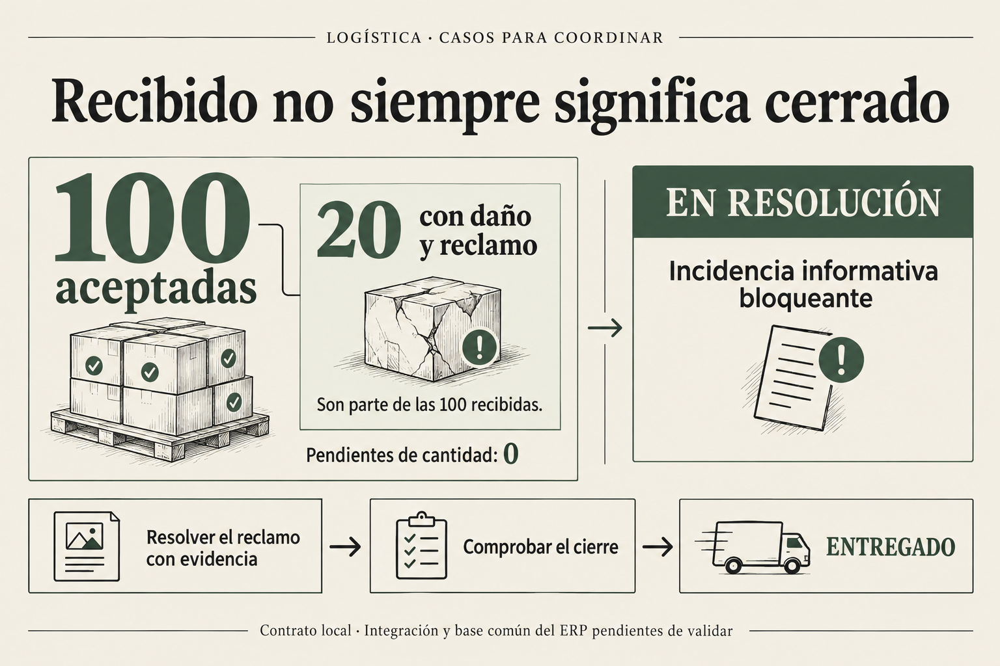
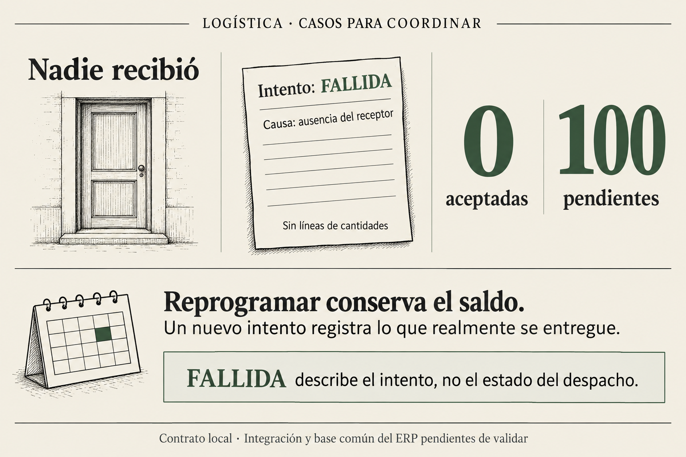
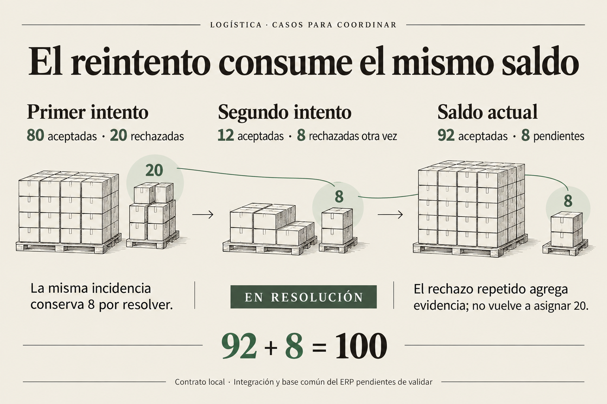
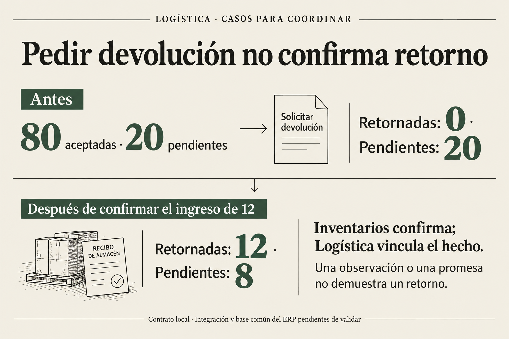
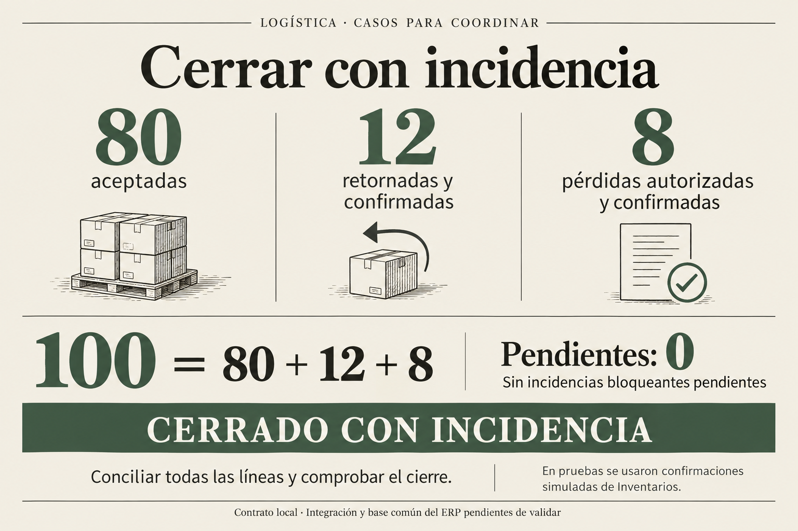
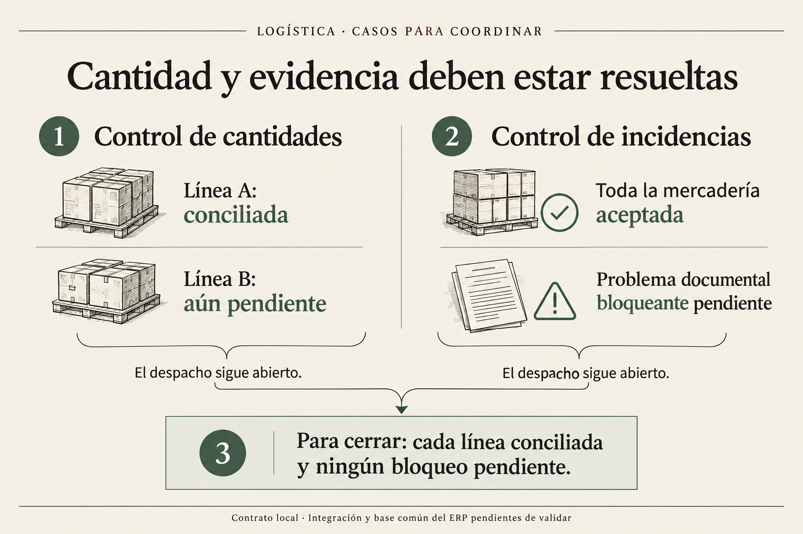
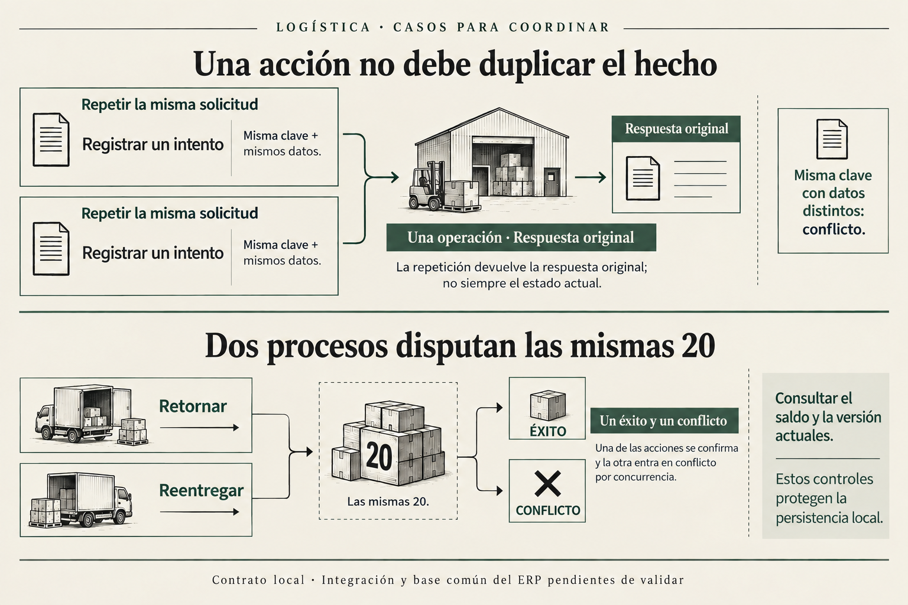

Grupo 7 · Logística · 5 de octubre de 2026
Qué ocurre en cada caso
Diez láminas para hablar el mismo idioma al conectar el funcionamiento del módulo con su persistencia. Cada ejemplo explica el hecho, el saldo y lo que permite cerrar el despacho.
Alcance: explican la implementación local de persistencia. La base común y los contratos con G4, G5 e Inventarios necesitan validación del equipo. El reparto confirmado es Pedro en persistencia y Alisson en Services, Controllers y funcionamiento. La entrega se publica en feature/logistics-flow-pedro. Se reutilizan las Guías existentes y el stock pertenece a Inventarios.
Caso 01
Entregar todo o entregar por partes
¿Una entrega por partes ya termina el despacho?
No. Si se aceptan 60 de 100 y no hay rechazo, quedan 40 por atender. El intento tiene resultado ACEPTADA; el despacho sigue EN_TRANSITO.

Qué hace el bloque de funcionamiento
Registrar lo que el cliente recibió y mostrar el saldo de cada línea. No inventar un rechazo ni usar PARCIAL sólo porque falta otra visita.
Qué garantiza la persistencia
recordDelivery guarda la aceptación y comprueba cantidades, estado esperado y bloqueos. El cierre normal requiere todas las líneas completas.
Para explicar con precisión. Los ejemplos de 100/100 y 60/40 son independientes. Se supone que no existen incidencias bloqueantes previas.
Volver al índice ↑Caso 02
Rechazo: la mercadería sigue pendiente
¿Las 20 rechazadas ya están de vuelta en el almacén?
No. Con 80 aceptadas y 20 rechazadas hay 20 pendientes y un caso por resolver. Todavía no existe un retorno confirmado.

Qué hace el bloque de funcionamiento
Capturar el motivo de rechazo y coordinar el destino de esas 20. No aumentar el stock ni anunciar que el almacén ya las recibió.
Qué garantiza la persistencia
recordDelivery registra aceptación, rechazo e incidencia en la misma transacción. La incidencia asigna esas 20 pendientes a un caso.
Para explicar con precisión. Rechazo, solicitud de devolución y entrada confirmada al almacén son tres hechos distintos.
Volver al índice ↑Caso 03
Daño y rechazo pueden ser el mismo problema
¿Daño de 20 y rechazo de esas mismas 20 suman 40?
No. Son dos causas sobre una sola cantidad física. El caso conserva 20 pendientes y las dos causas, sin duplicar el saldo.

Qué hace el bloque de funcionamiento
Identificar qué mercadería es la afectada y adjuntar evidencia. Si se conoce la segunda causa más tarde, ampliar el caso existente.
Qué garantiza la persistencia
Las causas pueden registrarse juntas en recordDelivery o añadirse mediante recordIncidentAction con AGREGAR_CAUSAS.
Para explicar con precisión. La incidencia registra el problema; logistica_operaciones impide repetir un comando. Cumplen funciones diferentes.
Caso 04
Aceptar toda la cantidad no siempre permite cerrar
¿Recibir 100 permite cerrar aunque haya un reclamo?
No mientras el reclamo bloqueante siga abierto. Las 20 dañadas ya están dentro de las 100 aceptadas: no se suman otra vez.

Qué hace el bloque de funcionamiento
Recoger el daño al registrar la recepción, atender el reclamo y guardar evidencia de su resolución antes de solicitar cierre.
Qué garantiza la persistencia
recordDelivery admite incidencias informativas. resolveIncident registra la resolución operativa; closeDispatch vuelve a comprobar el cierre.
Para explicar con precisión. El saldo puede ser cero y el despacho seguir EN_RESOLUCION. Resolver el reclamo y cerrar son pasos distintos.
Volver al índice ↑Caso 05
Visita fallida sin cantidades inventadas
¿Cómo registrar que no había nadie para recibir?
Registrar un intento FALLIDA con AUSENCIA_RECEPTOR, motivo y contexto; sin receptor ni líneas. Siguen pendientes las 100.

Qué hace el bloque de funcionamiento
Distinguir ausencia, problema documental y otras causas reales. Reprogramar la visita no equivale a entregar mercadería.
Qué garantiza la persistencia
recordDelivery guarda el intento y la incidencia. Las gestiones usan recordIncidentAction; la atención del caso exige evidencia.
Para explicar con precisión. FALLIDA es el resultado del intento. El despacho queda EN_RESOLUCION mientras exista un caso bloqueante.
Volver al índice ↑Caso 06
El segundo intento atiende el mismo caso
¿Qué pasa si luego acepta 12 de las 20 rechazadas?
La aceptación acumulada pasa de 80 a 92. Si vuelve a rechazar las otras 8, quedan las mismas 8 pendientes en el caso original.

Qué hace el bloque de funcionamiento
Relacionar aceptación y rechazo con la incidencia existente. No abrir otro caso para las mismas 8 ni descontarlas dos veces.
Qué garantiza la persistencia
recordDelivery valida aceptaciones_incidencias y rechazos_incidencias. La resolución de las 12 aceptadas se crea dentro de ese comando.
Para explicar con precisión. Este reintento combinado 12/8 es un ejemplo derivado de las reglas. Las pruebas existentes verifican rechazo repetido y aceptaciones de 12 y 8 en comandos separados.
Volver al índice ↑Caso 07
Solicitar devolución no confirma una entrada
¿Cuándo se cuentan las unidades como retornadas?
Cuando Inventarios confirma el hecho real. Solicitar devolver 20 no cambia el saldo; una entrada confirmada de 12 deja 8 pendientes.

Qué hace el bloque de funcionamiento
Registrar la solicitud y coordinar la recepción con Inventarios. Una observación o una referencia enviada por el cliente no demuestra la entrada.
Qué garantiza la persistencia
recordIncidentAction no crea retornos. resolveIncident obtiene el hecho de un proveedor confiable, valida su identidad y guarda la confirmación.
Para explicar con precisión. Falta conectar el proveedor real de Inventarios. Las pruebas usan confirmaciones simuladas; Logística no crea stock ni Kardex propios.
Volver al índice ↑Caso 08
Conciliar antes de cerrar con incidencia
¿Cómo termina el caso de 80 aceptadas, 12 retornadas y 8 perdidas?
80 + 12 + 8 = 100. El pendiente es cero cuando el retorno y la pérdida están confirmados y autorizados. Después se comprueba el cierre.

Qué hace el bloque de funcionamiento
Coordinar la entrada de 12 y la autorización de pérdida de 8. Solicitar el cierre sólo cuando todas las líneas estén conciliadas.
Qué garantiza la persistencia
resolveIncident registra ambas resoluciones parciales con referencias únicas. closeDispatch verifica saldos y bloqueos y fija CERRADO_CON_INCIDENCIA.
Para explicar con precisión. La pérdida no genera un segundo egreso de stock. Estas confirmaciones externas todavía usan un adaptador de pruebas.
Volver al índice ↑Caso 09
Dos controles independientes antes de cerrar
¿Qué puede mantener abierto un despacho?
Una línea pendiente, aunque otra ya esté completa; o un caso bloqueante, aunque toda la mercadería esté aceptada.

Qué hace el bloque de funcionamiento
Mostrar los pendientes por línea y los casos sin resolver. No habilitar cierre sólo porque un total general parezca completo.
Qué garantiza la persistencia
closeDispatch exige pendiente cero en cada línea y ausencia de casos bloqueantes. No permite forzar un estado final con transitionDispatch.
Para explicar con precisión. La lámina presenta dos situaciones distintas. No son hechos simultáneos de un mismo envío; resolver una no resuelve automáticamente la otra.
Volver al índice ↑Caso 10
Repetir una solicitud no repite el hecho
¿Qué ocurre ante un clic duplicado o dos procesos simultáneos?
La misma clave y los mismos datos devuelven el resultado original. Si dos comandos compiten por las mismas 20, sólo uno puede consumirlas.

Qué hace el bloque de funcionamiento
Autorizar también las repeticiones. Conservar clave y datos originales ante fallo de conexión; ante conflicto, consultar estado, saldo y versión actuales.
Qué garantiza la persistencia
logistica_operaciones conserva comando, huella y respuesta. Las transacciones, bloqueos y versiones impiden consumir dos veces el mismo saldo.
Para explicar con precisión. Aquí “retornar” requiere confirmación de Inventarios y “reentregar” exige aceptación real del cliente. Reprogramar no consume saldo. Esta protección local no sustituye la coordinación con Inventarios.
Volver al índice ↑